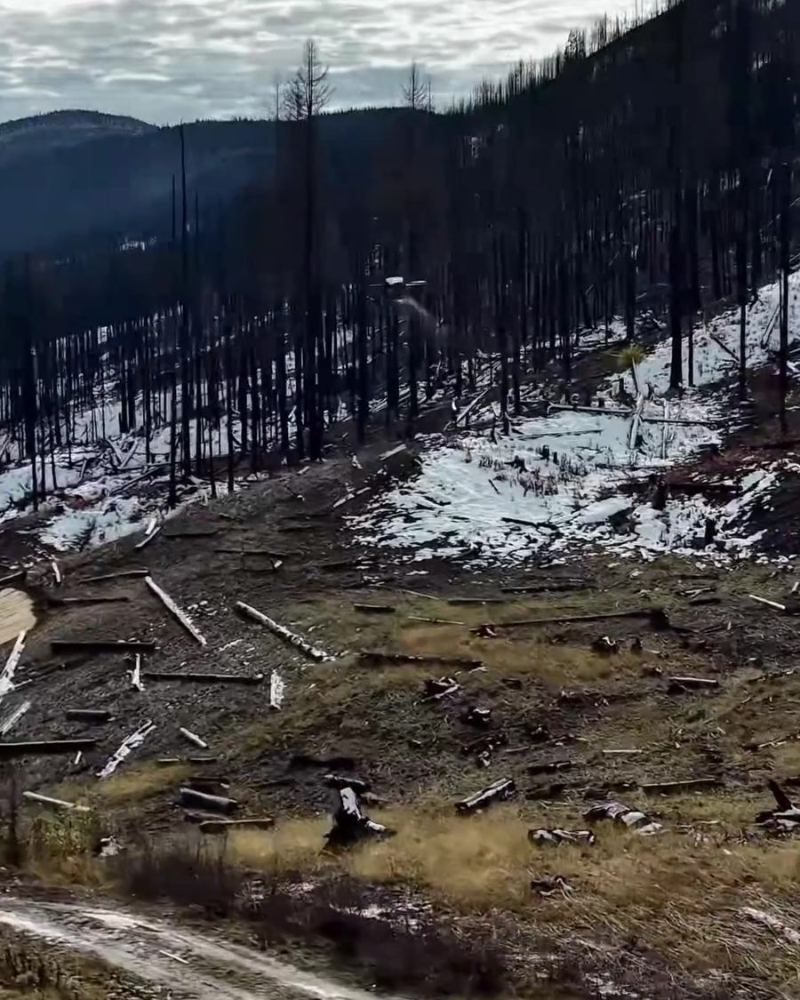
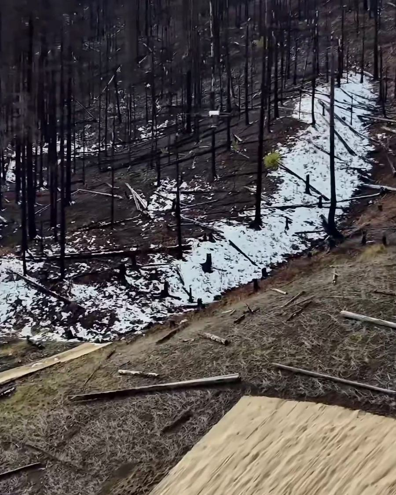
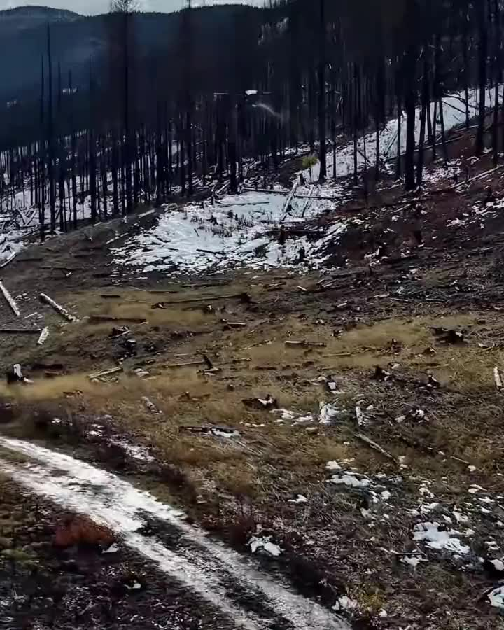

ProjectPipeline right-of-wayWorkSeed spreadingAircraftEAVision J150DatesOct 27, Nov 2 & Nov 3, 2026RegionBritish Columbia
Right-of-way seeding, BC
Seed spreading on a pipeline right-of-way with the J150, across three field days in late October and early November 2026. The ground was steep, burned and partly snow-covered: the kind of slope where putting crews and equipment on foot is slow and risky.
Right-of-way seeding · BC


